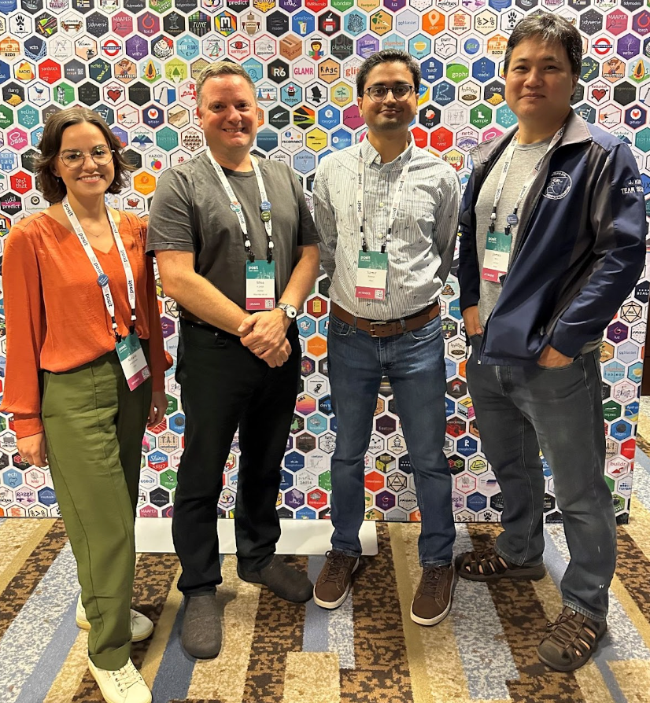

The R Consortium recently talked with Natalia Andriychuk, Statistical Data Scientist at Pfizer and co-founder of the RTP R User Group (Research Triangle Park in Raleigh, North Carolina), to get details about her experience supporting the Pfizer R community and starting a local R user group.
She started her R journey over 7 years ago, and since then, she has been passionate about open source development. She is a member of the Interactive Safety Graphics Task Force within the American Statistical Association Biopharmaceutical Safety Working Group, which is developing graphical tools for the drug safety community.
 Natalia Andriychuk at posit:conf 2023
Natalia Andriychuk at posit:conf 2023
Please share your background and involvement with the R community at Pfizer and beyond.
From 2015 to 2022, I worked at a CRO (Contract Research Organization) in various roles, where I discovered my passion for Data Science after being introduced to R, JavaScript, and D3 by my talented colleagues. I became a part of an amazing team where I learned valuable skills.
Later, when I began looking for new career opportunities, I knew that I wanted to focus on R. I sought a role that would deepen my R skills and further advance my R knowledge. This is how I came to join Pfizer in 2022 and became a part of the amazing team. I am a Statistical Data Scientist in the R Center of Excellence SWAT (Scientific Workflows and Analytic Tools) team.
 Pfizer SWAT team at posit::conf2023 (left to right: Natalia Andriychuk, Mike K Smith, Sam Parmar, James Kim)
The R Center of Excellence (CoE) supports various business lines at Pfizer. We provide technical expertise, develop training on R and associated tools, promote best practices, and build a community of R users within Pfizer. Our community currently consists of over 1,200 members.
I will present Pfizer’s R CoE progress and initiatives during the R Consortium R Adoption Series Webinar on February 8th at 3:00 pm EST.
My first introduction to the R community was through the posit::conf (previously known as rstudio::conf) in 2018. Attending the conference allowed me to witness the welcoming nature of the R community. Five years later, in 2023, I made it to the speakers’ list and presented at the posit::conf 2023. It was an incredible experience!
I also follow several other avenues to connect with R community members. As the name suggests, I read R Weekly weekly and attend the Data Science Hangout led by Rachael Dempsey at Posit. Every Thursday, Rachael invites a data science community leader to be a featured guest and share their unique experiences with the audience. Fortunately, I was invited as a featured guest to one of the Posit Data Science Hangouts. I shared my experience organizing and hosting an internal R at Pfizer Hangout.
Can you share your experience of starting the RTP (Research Triangle Park) R User Group?
Nicholas Masel and I co-organize the RTP R User Group in our area. We formed the RTP R User Group in 2023 and have held three meetings: meet-and-greet, social hour, and a posit::conf 2023 watch party.
 RTP R User Group Social Hour Gathering
RTP R User Group Social Hour Gathering
We hope to expand and increase attendance at our meetups in 2024. We currently have approximately 74 members who joined the online meetup group, and we look forward to meeting all of them in person moving forward.
Can you share what the R community is like in the RTP area?
Nicholas and I both work in the pharmaceutical industry, and thus far, our in-person user group meetings have predominantly included individuals from this field. However, we want to emphasize that our user group is open to everyone, regardless of industry or background.
The RTP area has great potential for a thriving R User Group. We are surrounded by three major universities (University of North Carolina at Chapel Hill, Duke University, and North Carolina State University), the growing high-technology community and a notable concentration of life science companies. We anticipate attracting more students in the coming year, especially those studying biostatistics or statistics and using R in their coursework. We also look forward to welcoming individuals from various industries and backgrounds to foster a rich and collaborative R user community.

Please share about a project you are working on or have worked on using the R language. Goal/reason, result, anything interesting, especially related to the industry you work in?
I am an open source development advocate, believing in the transformative power of collaborative innovation and knowledge sharing. I am a member of the Interactive Safety Graphics (ISG) Task Force, part of the American Statistical Association Biopharmaceutical Safety Working Group. The group comprises volunteers from the pharmaceutical industry, regulatory agencies, and academia to develop creative and innovative interactive graphical tools following the open source paradigm. Our task force is developing a collection of R packages for clinical trial safety evaluation. The {safetyGraphics} package we developed provides an easy-to-use shiny interface for creating shareable safety graphics for any clinical study.
 {safetyGraphics} supports multiple chart types including web-based interactive graphics using {htmlwidgets}
{safetyGraphics} supports multiple chart types including web-based interactive graphics using {htmlwidgets}
We are preparing to share three new interactive visualizations we developed in 2023 during the upcoming ASA-DIA Safety Working Group Quarterly Scientific Webinar – Q1 2024 on January 30 (11:00 – 12:30 EST). Participating in the ISG Task Force has been an invaluable experience that allowed me to learn from talented data scientists and expand my professional network.
How do I Join?
R Consortium’s R User Group and Small Conference Support Program (RUGS) provides grants to help R groups organize, share information, and support each other worldwide. We have given grants over the past four years, encompassing over 65,000 members in 35 countries. We would like to include you! Cash grants and meetup.com accounts are awarded based on the intended use of the funds and the amount of money available to distribute.